Copy three files to your console, start the game, and press START.
ARMED POLICE BATRIDER is a 1998 arcade shooting game by RAIZING. CHASE! is a new mode for it made by COIN-OP GAME STUDIO. It adds a chain to build, medals that fly to your ship, and a difficulty that never gets out of hand. This Xbox 360 version (version 0.19) contains both CHASE! and the original arcade game, plus a training mode, save states, replays, and information panels (the “gadgets”) beside the game screen.
What you need
An Xbox 360 that can run homebrew .xex files from a dashboard such as Aurora.
The MAME ROM set batrider.zip (the merged set, which includes the Japanese version, batriderj). You must supply it yourself. CHASE! is built from it each time the game starts.
One controller. The game is for one player and uses the first controller connected.
Copy batrider360.xex, batrider360_manual.bin and batrider.zip into the same folder, on the console’s hard drive or a USB drive, then start batrider360.xex from your dashboard.
Starting the game
First you will see NOW LOADING while the ROM set is read. The first time you start the game it also creates its menu sounds and saves them as batrider360_menusnd.bin. After that come the arcade game’s WARNING screen, the COIN-OP GAME STUDIO logo, and the game’s opening. Press START at any time to go straight to the title screen. If the screen stays dark red, the ROM set was not found (see page ).
Vertical game, horizontal or vertical display
BATRIDER is a vertical game: the screen is taller than it is wide, as on the original arcade cabinet. The ROTATION setting in OPTIONS > GENERAL SCREEN (page ) tells the game how your display is set up:
ROTATION
Your display
What you see
OFF
Normal (horizontal)
The game in the middle of the screen, with the gadgets on both sides (page ). This is the default.
LEFT
Turned on its side, with its top edge on your left
The game fills the whole screen, with the gadgets in strips above and below it.
RIGHT
Turned on its side, with its top edge on your right
The same, turned the other way.
ROTATION OFF: a normal TV, with the gadgets beside the game.LEFT / RIGHT, shown upright.
With either setting, the game and its menus appear the right way up, as in the pictures in this manual.
CAUTION
Not every TV is designed to be stood on its side. Only turn a display or mount that is made for it, never cover its vents, and never turn it while it is switched on.
Controls
Button
What it does
Left stick or ✚ d-pad
Move your ship. In menus: move the cursor (hold to repeat).
A
SHOT: hold to fire. In menus: select, or change to the next value.
B
BOMB. In menus: go back.
X
SPECIAL: changes the formation of your options (Battle Garegga guest riders only). In CHASE! it also sets off the Chase Break. On the save state and replay pages: delete.
RT
AUTO SHOT: fires automatically while held.
BACK
During a stage: open the pause menu. In menus: go back. During a replay: pause the replay.
START
On the opening screens: skip to the title. On the PLAY and TRAINING pages: start playing. During play: the arcade game’s own START button, used for its secret commands (page ). In OPTIONS: close all pages at once.
LB / RB
During a replay: slower / faster. On some menu rows: change the value in bigger steps. In the on-screen manual: previous / next page.
You can change which button does what in OPTIONS > CONTROLS (page ). The table above shows the default layout. The menus always use A, B, X, START and BACK, whatever you set in CONTROLS.
The title menu and PLAY
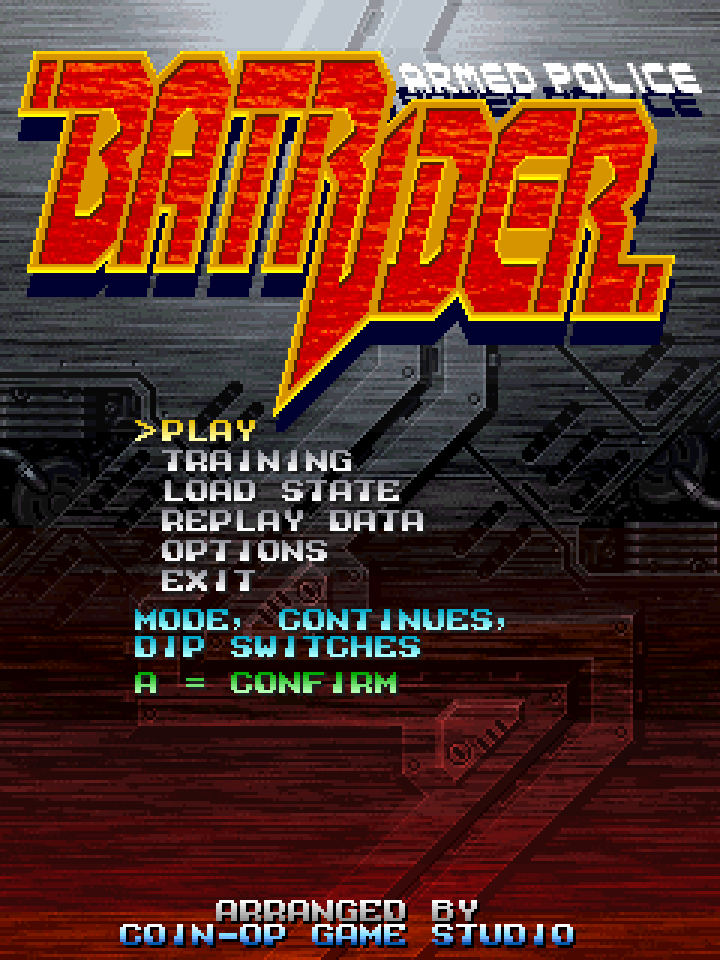
The title menu.
The title screen has a menu with six rows. Press up and down to choose a row, and A to open it. The line under the menu explains the selected row.
PLAY
Start a run (see below).
TRAINING
Practise a stage or a boss with your own settings (page ).
LOAD STATE
Continue from a save state (page ).
REPLAY DATA
Watch your saved replays (page ).
OPTIONS
Screen, gadgets, controls, sound and more (page ).
EXIT
Quit to the dashboard. Settings and scores are already saved, so nothing is lost.
There are no coins to insert: both games are set to free play. If you leave the title menu alone for about 30 seconds, the game’s demo starts. Press START to return to the title.
PLAY
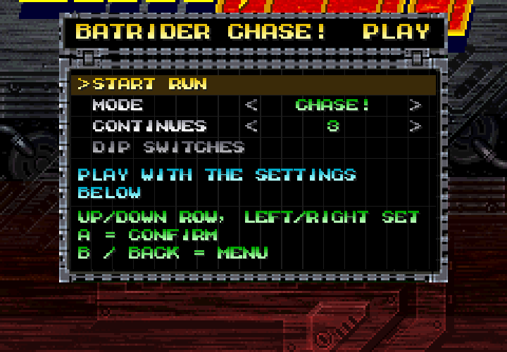
The PLAY page.
PLAY opens a page with four rows. Press left and right (or A) to change a value. Press START on any row to start playing, or B / BACK to return to the title menu.
START RUN
Start a run of the selected MODE.
MODE
CHASE! or ORIGINAL (see below).
CONTINUES
How many continues you get after a GAME OVER: 3, 5 or 7. This applies to both games.
DIP SWITCHES
Settings for the original game (page ). Greyed out in CHASE!. Shows CHANGED in red when they differ from the defaults.
MODE: CHASE! or ORIGINAL
MODE
START RUN plays
CHASE!
The CHASE! mode: chain, medal magnet, Chase Break, and a difficulty (rank) that stays between 50% and 75%. This is the default MODE.
ORIGINAL
The original arcade game, exactly as it plays in the arcade (page ).
Each MODE has its own high score tables, so CHASE! scores and original scores are never mixed. When you change MODE, the other game starts up behind the menu straight away, and the menu headings change to show which game is selected (BATRIDER CHASE! or BATRIDER). The TRAINING page has the same MODE setting.
Before take-off: three choices
Every run starts with three selection screens. Each has a timer; when it runs out, the highlighted choice is taken.
SELECT COURSE
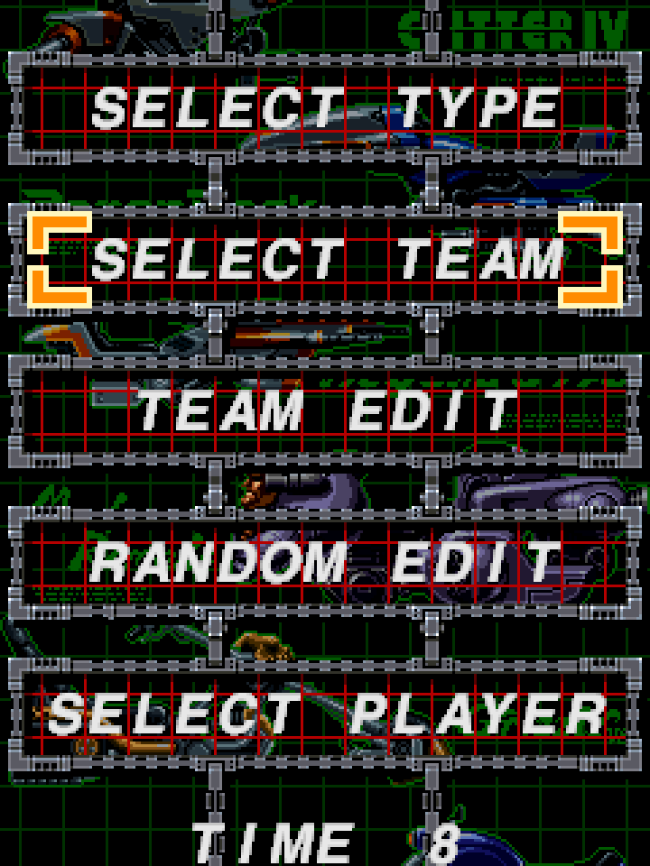
SELECT TYPE
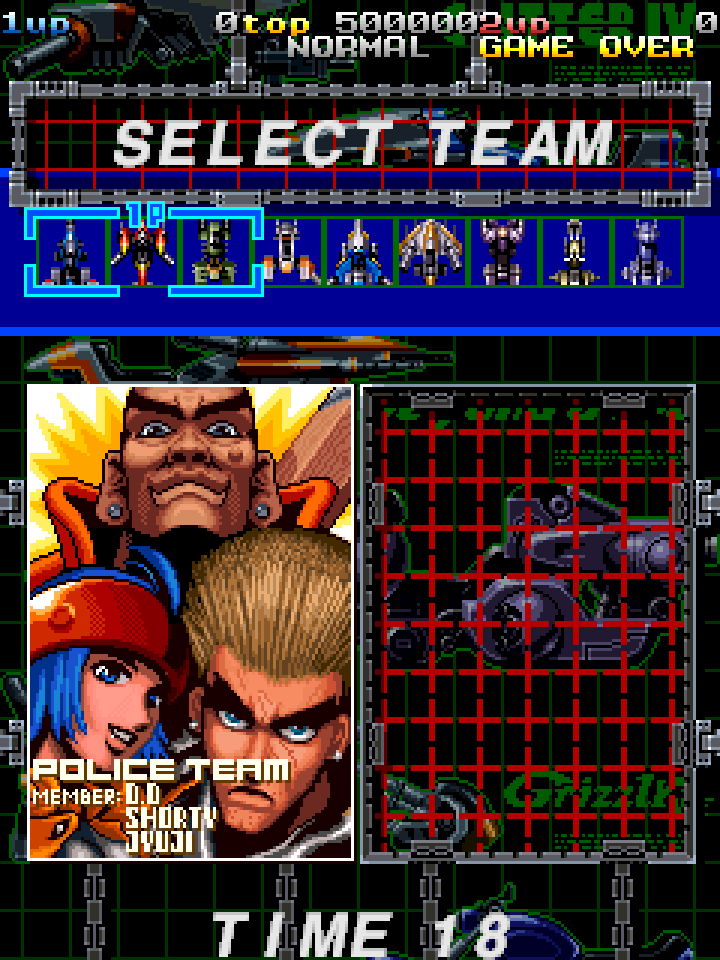
SELECT TEAM
SELECT COURSE chooses the course. The bottom of the screen describes the selected one.
Course
Stages
Description
TRAINING
3
AUTO BOMBER: if you are hit while you have a bomb, it goes off automatically. Original game only; CHASE! has no auto bomb.
NORMAL
5
NORMAL BOMBER: the intermediate course.
ADVANCE
7
NORMAL BOMBER: the advanced course.
SPECIAL
bosses
ONLY BOSS, FULL POWER UP: the bosses one after another, with your ship at full power from the start.
The TRAINING course is part of the arcade game; the TRAINING mode on the title menu is a separate practice mode (page ).
SELECT TYPE chooses how you pick your riders:
SELECT TEAM
One of the three ready-made teams below.
TEAM EDIT
Pick any three riders, one at a time.
RANDOM EDIT
Three riders chosen at random.
SELECT PLAYER
One rider who flies all of the run’s lives.
The riders
TEAM EDIT and SELECT PLAYER show all the riders in two rows: the nine Batriders on top, and nine guest riders from RAIZING’s earlier shooting games below. Press left and right to move along a row, and up and down to switch rows.
Teams
A team has three riders, and each rider is one life. They fly one at a time: when one is shot down, the next one takes over, and the game is over when the last one goes down. (In the original game the DIP switches can change the number of lives from one to four: page .)
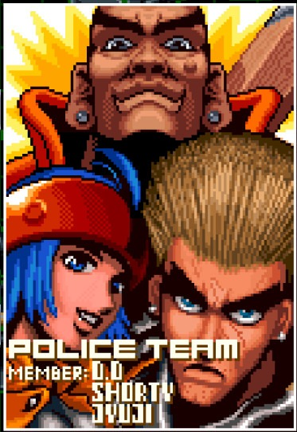
POLICE TEAM D.D, Shorty, Jyuji
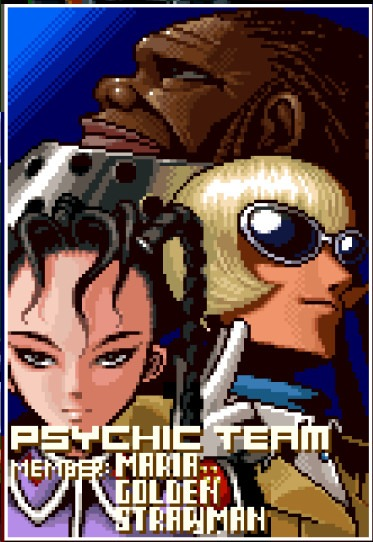
PSYCHIC TEAM Maria, Golden, Strawman
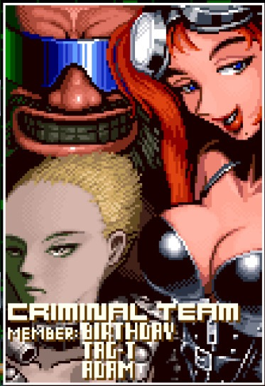
CRIMINAL TEAM Birthday, Tag-T, Adam
How to play
The stage scrolls up the screen. Shoot the enemies, collect what they leave behind, and reach the boss with lives to spare.
Action
Default
SHOT
A
Hold to fire. While you are not firing, your shot charges up.
AUTO SHOT
RT
Fires automatically while held, at the AUTOFIRE rate set in CONTROLS.
BOMB
B
Uses one of your bombs. Your bomb stock is shown at the bottom of the screen.
SPECIAL
X
For the four Battle Garegga guest riders only: changes the formation of your options (V, BACK, FRONT, CIRCLE, CONTROL). In CHASE! it also sets off the Chase Break.
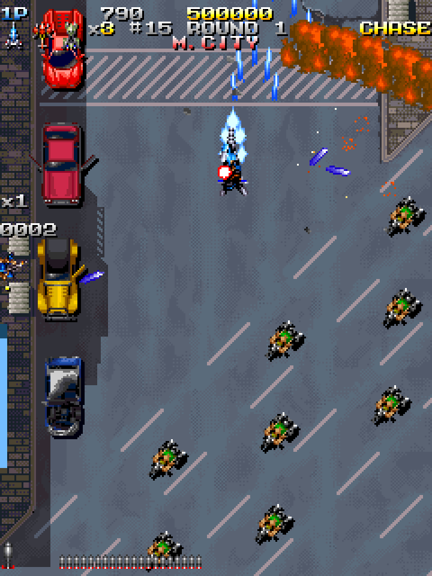
Your ship is at the bottom of the screen. The icons at the top left show your team: the rider flying now and the riders still waiting.
Small enemies go down in a few shots. Large enemies and ground targets take more hits, but leave more items behind.
Items
Enemies drop items in a fixed, repeating order: medal, power-up, medal, power-up, option. This pattern repeats five times, and the last power-up in the cycle is a large one.
Item
POWER / BIG P
Increases your shot power (small and large).
OPTION
A gun pod that flies alongside your ship.
BOMB / BIG B
Adds to your bomb stock (small and large).
MEDAL
Points (see below).
1UP
Brings back a rider who has been shot down.
Medals
Every medal you collect makes the next one worth more. There are 19 steps:
If a medal falls off the bottom of the screen, the value goes back to 100.
Rank
The game keeps track of how well you are doing with a hidden difficulty level called rank. Shooting, collecting items and staying alive raise the rank, and a higher rank makes the game harder. Losing a life lowers it again. In the original game the rank can go as high as it likes. In CHASE! it starts at 50% and never goes above 75%.
Bosses
Every stage ends with a boss, and every boss has a time limit. In CHASE! the remaining time is shown in seconds at the top of the screen. When time runs out, the fight ends whether you have destroyed the boss or not.
CHASE! mode
The CHASE! screen
In CHASE! the top of the screen is redrawn and a status bar is added down the left edge. Together they show everything you need.
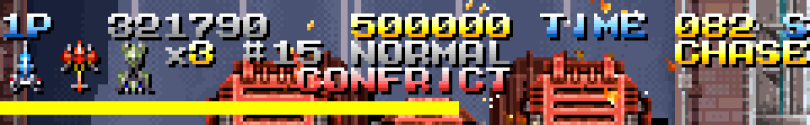
1
2
3
4
5
6
7
8
9
1Your score
2High score (in amber)
3Boss time remaining, in seconds
4Your team. Riders who have been shot down are shown dark
5Lives: riders still flying plus any banked extends. Red when you have one left
6Message line. Shows EXTEND, MAX LIVES and CASH IN (a Chase Break)
7Boss health bar. Amber; red in the last quarter
8Boss name
9CHASE tag: shows that CHASE! rules are in use
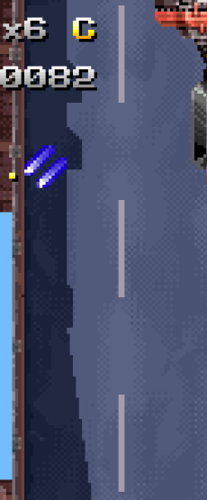
10
11
12
13
14
10Multiplier, from x1 to x8. Amber at x8
11C: a Chase Break is ready (at x4 or higher)
12Chain: the number of kills since the chain started
13Position marker. An amber ^ while you are in the upper half of the screen, a blue v in the lower half
14Chain timer, emptying downwards. Blue normally, red when almost empty, white while recovering after a Chase Break
The hitbox
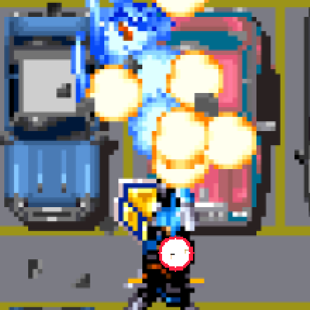
The white dot inside a red ring is your ship’s hitbox: the only part of the ship that can be hit. Bullets can pass over the rest of the ship without harming you. The hitbox is drawn at the same layer as your ship, so anything drawn on top of your ship also covers it.
The HITBOX setting (on the TRAINING page and in OPTIONS > DEBUG MENU) controls what is shown in both games: OFF, PLAYER (your ship’s hitbox; the default) or ALL.
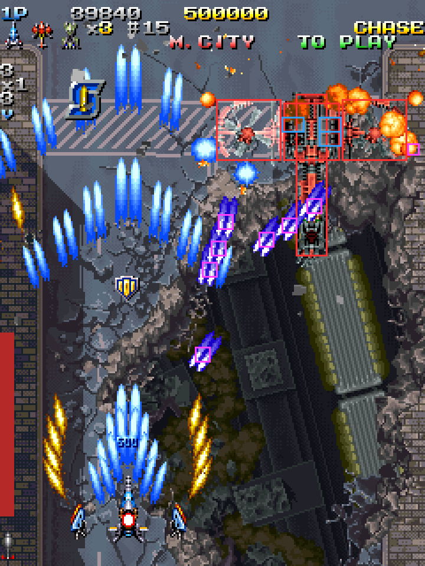
HITBOX ALL.
ALL also shows every collision box the game checks:
red: enemies that hurt you if you touch them;
blue: targets that can only be shot, such as ground targets;
magenta: enemy bullets;
plus your ship’s hitbox, as with PLAYER.
CHASE! mode
The CHASE! rules
A summary of everything CHASE! changes. The following pages explain each part in detail.
Rank
Starts at 50% and goes up to 75% at most. Losing a life lowers it, but never below 50%. A high multiplier makes it rise faster.
Chain
Every kill adds 1 to the chain. Every 16 kills raise the multiplier by one step, up to x8. Every kill scores its normal points times the multiplier.
Timer
Each kill refills the chain timer: to 1.5 seconds in the upper half of the screen, to 1 second in the lower half.
Timer runs out
Above x1: you lose two multiplier steps. At x1: the chain is broken.
Losing a life
The multiplier and the medal value are halved, and the timer pauses for three seconds.
Bombs
The timer pauses while a bomb goes off, and for one second after.
Medals
Medals near your ship are pulled in; while you hold SHOT, all medals are. Losing a medal worth 1,000 or more breaks the chain.
Chase Break
Press SPECIAL at x4 or higher: all bullets and small enemies turn into medals. The multiplier resets to x1 and is locked for five seconds.
Extends
Every 1,000,000 points brings back a lost rider. Five lives at most.
Enemy aim
Enemies aim less precisely when you fly close to them.
Rank between 50% and 75%
A CHASE! run starts at rank 50%. The rank then rises as it normally does (a little every moment, and more when you shoot, collect items or get an extend), and CHASE! adds an extra push for every multiplier step above x1. It never goes above 75%, so CHASE! never gets harder than that.
Losing a life lowers the rank towards 50%, but never below it. Continuing resets it to exactly 50%.
Fixed settings
CHASE! always plays on HARD difficulty with three lives, and uses its own extend system instead of the original game’s bonus life. The DIP switches have no effect on it, and the TRAINING course’s auto bomb is turned off. CHASE! is for one player only.
CHASE! mode
Chain and multiplier
Keep destroying enemies without a break. The chain counts your kills, and the multiplier decides what each kill is worth.
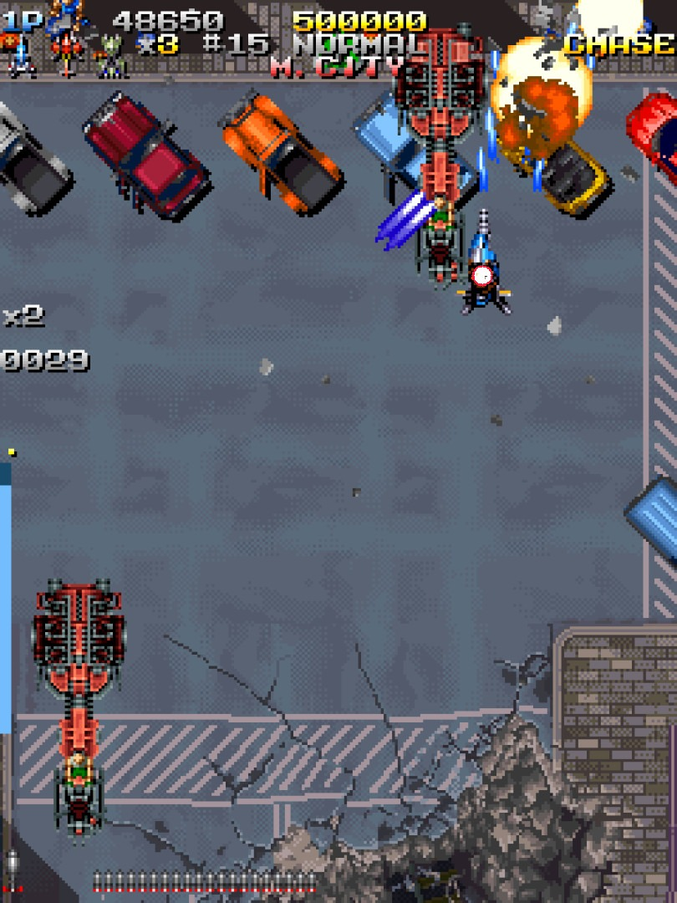
x2: 16 kills
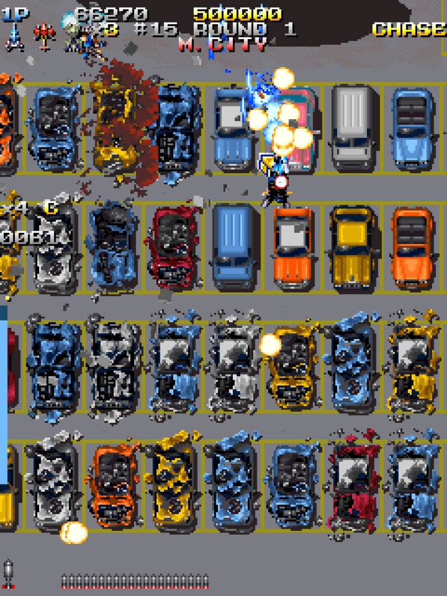
x4: 48 kills
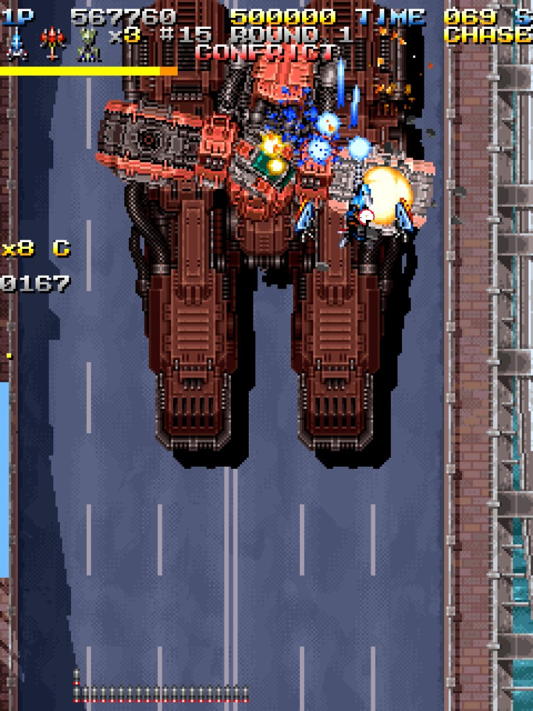
x8: 112 kills or more
Every enemy you destroy adds 1 to the chain. Every 16 kills raise the multiplier by one step, from x1 up to x8, and every kill scores its normal points times the multiplier. The chain keeps counting past x8, but the multiplier stays at x8.
The timer
Every kill also refills the chain timer, the gauge on the left side of the screen:
Your position
A kill refills the timer to
Forward: upper half of the screen
1.5 seconds (full)
Back: lower half of the screen
1 second
The position marker on the left bar shows which half you are in. Flying forward makes the chain easier to keep; hanging back gives you half a second less between kills.
TIP
Hits on a boss also count towards the chain and keep the timer going between its attack waves. Boss fights are a good place to build up your multiplier.
When the timer runs out
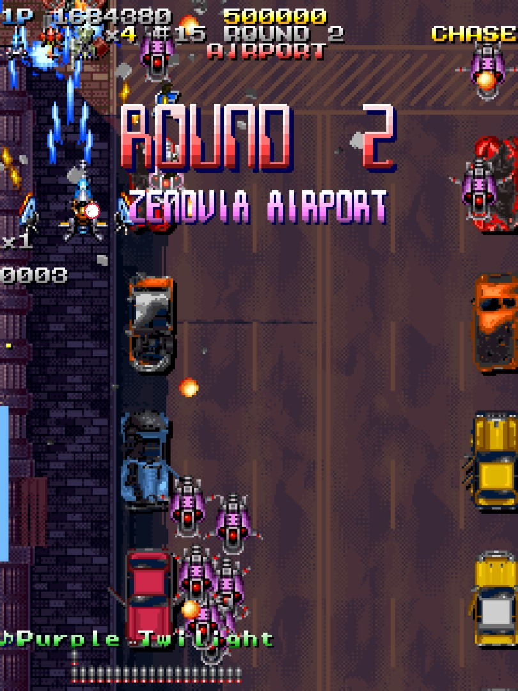
After the chain breaks: back to x1, counting from zero.
Above x1, you lose two multiplier steps and the timer is set to one second. If you don’t destroy anything in that second, you lose two more steps.
At x1, the chain breaks and the count goes back to zero.
Starting from x8 with a full timer and no kills, it takes four and a half seconds for the chain to break.
Other things that affect the chain
Losing a life
The multiplier is halved (x8 becomes x4), the medal value is halved too, and the timer pauses for three seconds while your next rider arrives.
Using a bomb
The timer pauses while the bomb goes off and for one second after. Kills made with the bomb still count.
Losing a medal
If a medal worth 1,000 or more falls off the screen, the chain breaks.
A Chase Break
You spend your multiplier: it goes back to x1 (page ).
Continuing
The chain, the multiplier and the medal value all start over.
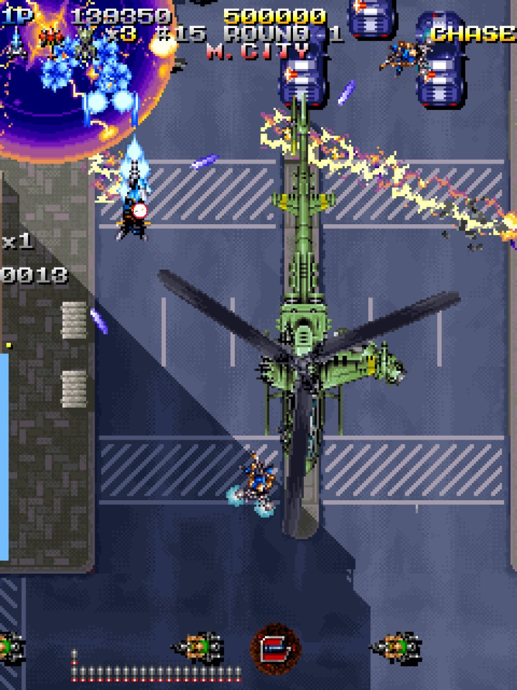
A bomb going off: the timer pauses.
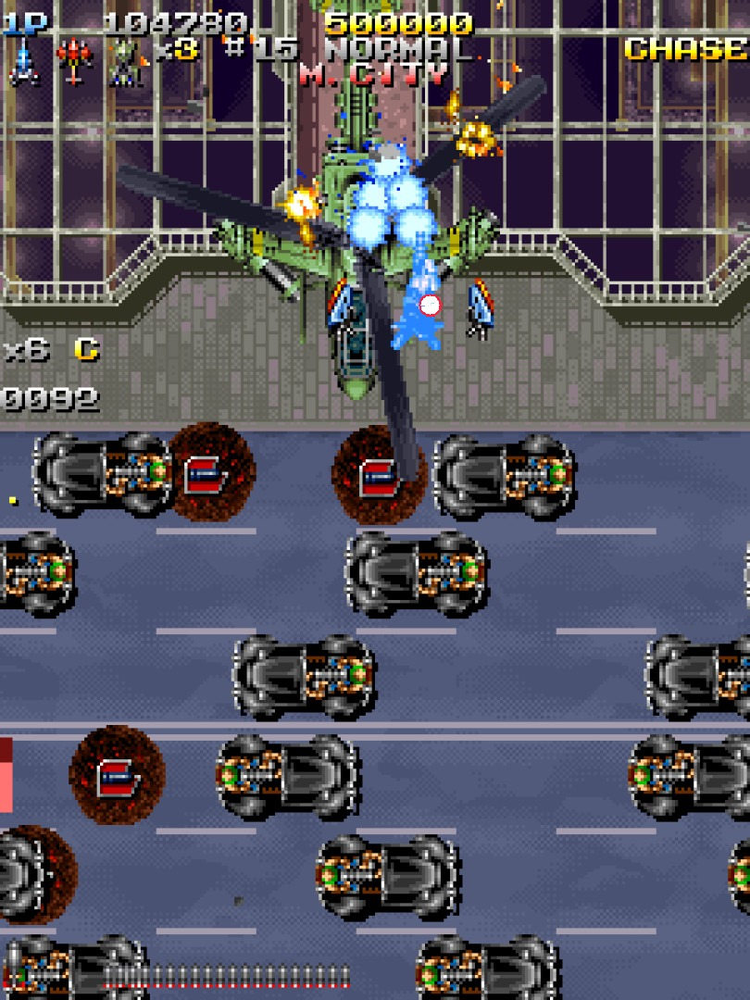
Timer almost empty: the gauge turns red.
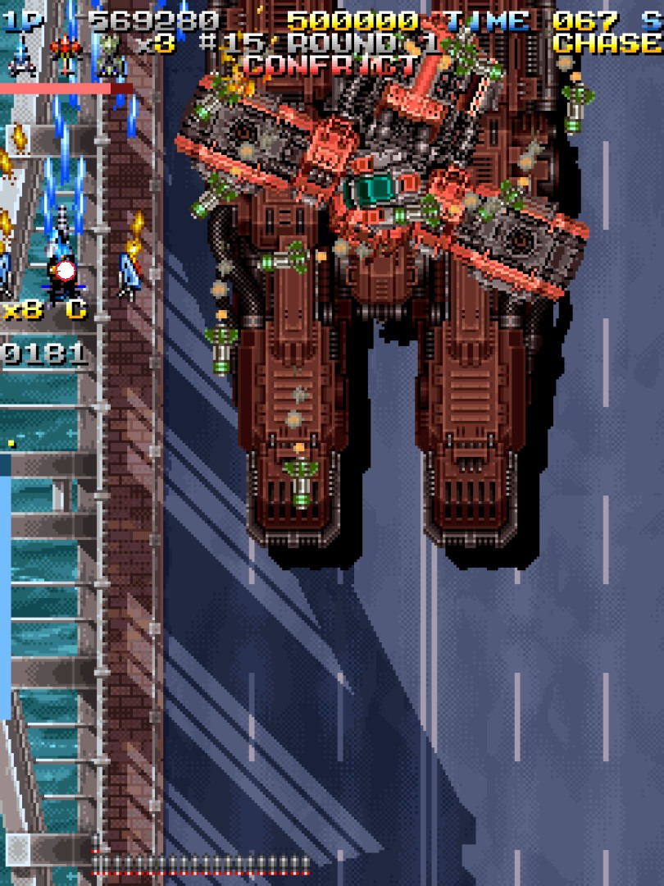
A boss in its last quarter: the bar turns red.
CHASE! mode
Medals and the magnet
Medal values work as in the original game. CHASE! adds a magnet that pulls medals to your ship.
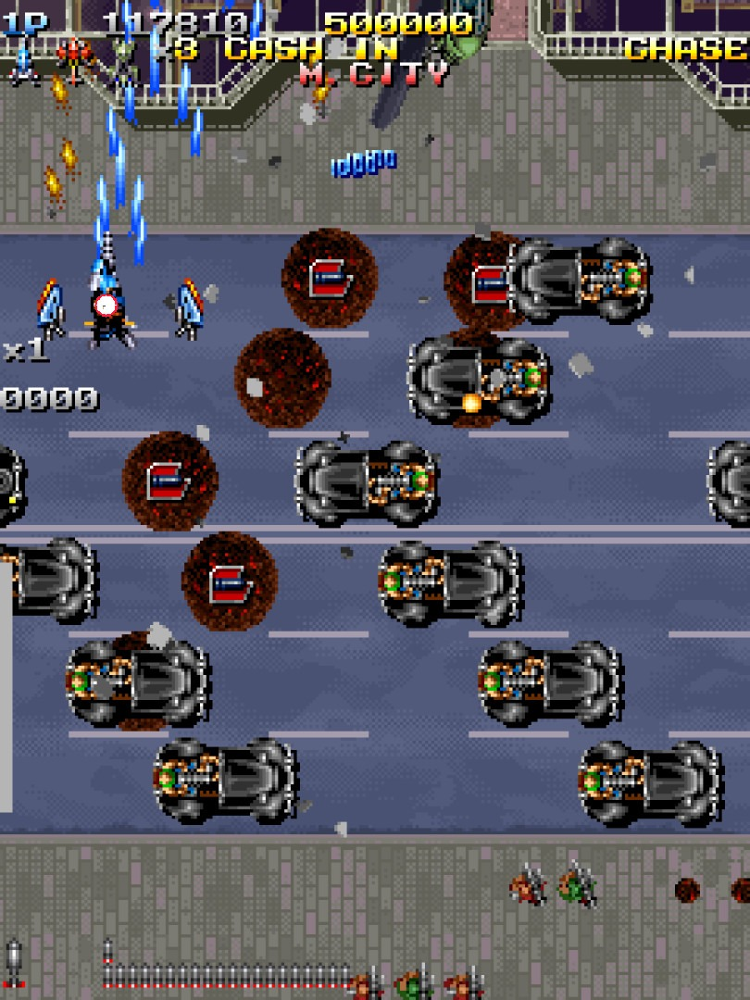
Medals flying to the ship.
Any medal that comes within about 100 pixels of your ship (roughly two fifths of the screen’s width) is pulled straight to it.
While you hold SHOT, the magnet covers the whole screen and every medal flies to you.
Medals lying on the ground, such as those shaken out of buildings by a bomb, are pulled in from anywhere, even when you are not firing.
The magnet only works while a rider is flying. In the moment between losing a rider and the next one arriving, medals fall normally.
TIP
The magnet makes it much easier to keep the medal value high. Protect it: losing a medal worth 1,000 or more resets the medal value and breaks your chain.
CHASE! mode
The Chase Break
Trade in your multiplier for a screen full of medals.
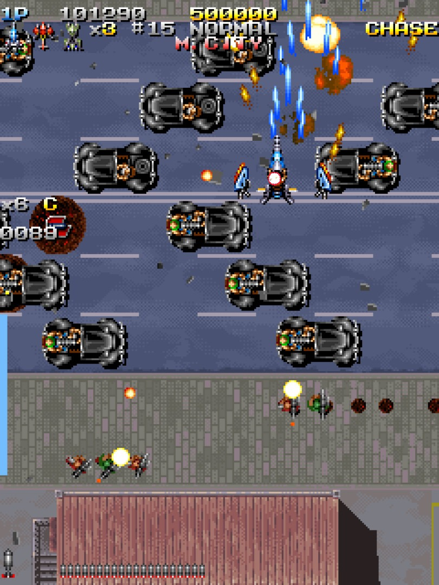
1. At x4 or higher, an amber C lights up next to the multiplier.2. Press SPECIAL: bullets and small enemies turn into medals.
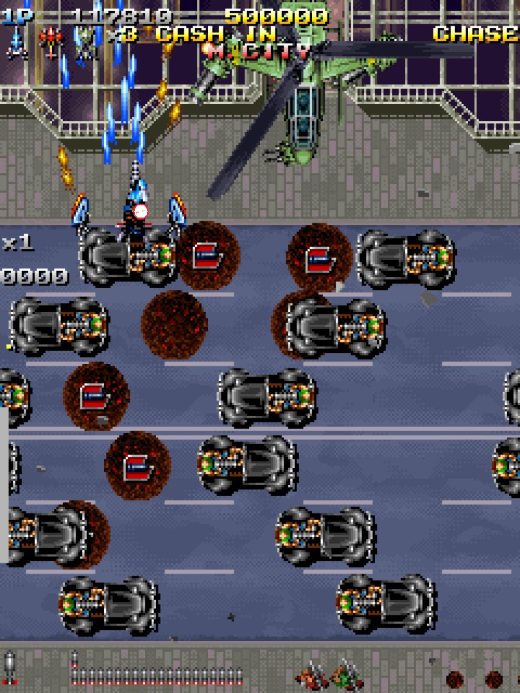
3. The multiplier stays at x1 while the white gauge empties.
When the multiplier is x4 or higher, press SPECIAL (X) to set off a Chase Break:
every enemy bullet on the screen disappears, and every small enemy is destroyed (each scoring its normal points);
each of them leaves behind a medal at the current medal value, which the magnet pulls to you. If there are too many medals for the screen, the rest are added straight to your score at the same value;
the multiplier goes back to x1 and the chain to zero.
After that, the multiplier is locked for five seconds. Kills still score points but do not add to the chain, and the gauge on the left turns white while it empties. You cannot set off another Chase Break until you are back at x4.
The message line shows CASH IN when a Chase Break goes off.
Bosses are not small enemies. If there is nothing to convert (for example, just a boss and no bullets), pressing SPECIAL does nothing and you keep your multiplier.
TIP
Medals created by a Chase Break are a free bonus: if one of them falls off the screen, your medal value is not reset.
NOTE
SPECIAL also changes the formation of the Battle Garegga guest riders’ options. For these riders, a short press (released within half a second) changes the formation when you let go, and a long press (held for half a second) sets off the Chase Break without changing the formation.
CHASE! mode
Lives, extends and continues
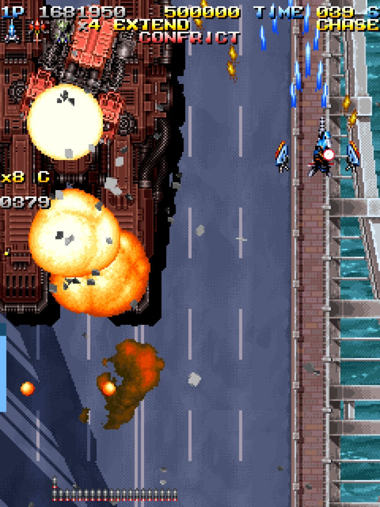
The score passes one million: four lives.
Extends
Every 1,000,000 points gives you an extend, and the message line shows EXTEND.
An extend brings back a rider who has been shot down; they rejoin at the back of the team. If no one has been shot down, the extend is banked and used as soon as someone is.
You can have five lives at most (riders flying plus banked extends). An extend earned when you already have five is worth 100,000 points instead, and the message line shows MAX LIVES.
The number next to your team icons is your number of lives. It turns red when you have one left.
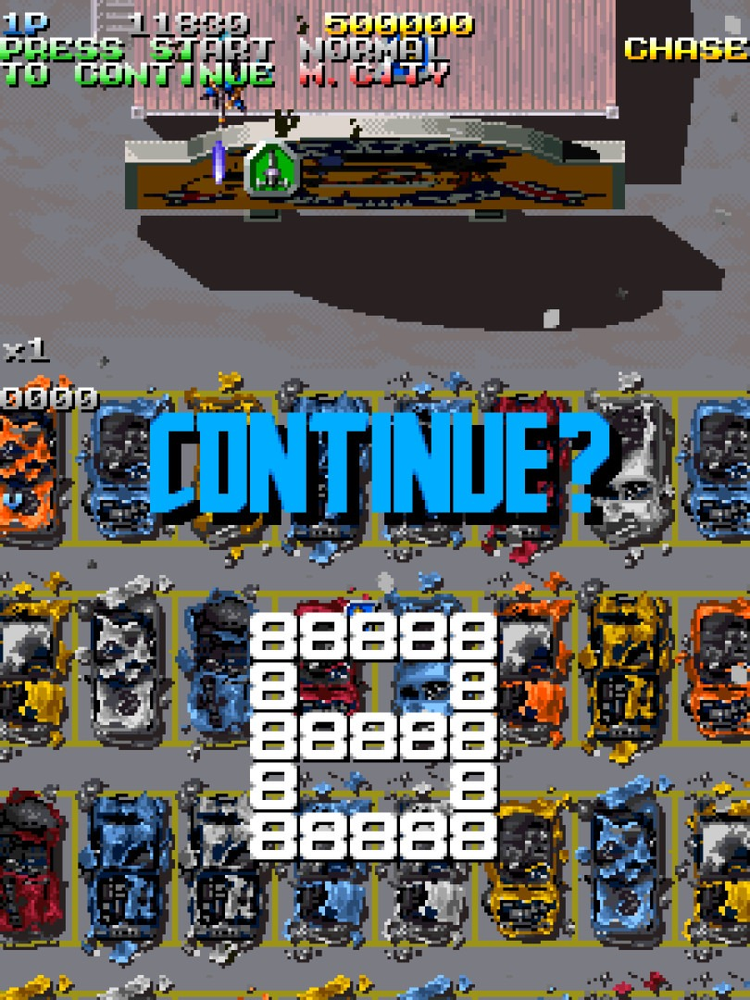
CONTINUE? Press START before the count reaches zero.
Continues
When your last rider is shot down, the game asks CONTINUE? and starts a countdown. Press START to carry on with the same team.
You get three continues, or five or seven if you set CONTINUES on the PLAY page. Continuing resets the chain, the multiplier and the medal value, and sets the rank back to 50%.
Continuing also makes your score invalid (page ). TRAINING has no continues: after a GAME OVER you go back to the TRAINING page.
The original game
When MODE is set to ORIGINAL, START RUN plays ARMED POLICE BATRIDER exactly as it plays in the arcade.
None of the CHASE! rules apply: there is no chain, no medal magnet and no Chase Break, and the rank has no limit. The game uses the arcade’s default settings (NORMAL difficulty, three lives, and an extend item every 1,500,000 points) unless you change them with the DIP switches (page ). It is set to free play, and the screen looks exactly like the arcade original (no CHASE tag). The hitbox and the gadgets work in both games (page ).
Both games share everything outside of play: the menus, the pause menu, the CONTINUES setting, TRAINING, save states and replays. Each game keeps its own high score tables.
Training
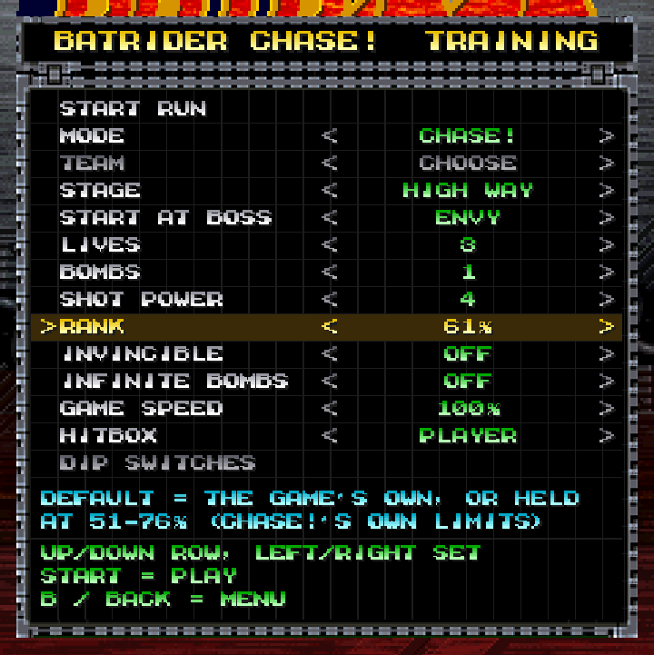
The TRAINING page: HIGH WAY’s boss ENVY, medals starting at 700, rank held at 61%.
TRAINING lets you practise any stage or boss of either game, with the team, lives, bombs, power, medal value and rank you choose. Press up and down to choose a row and left and right (or A) to change it. Press START on any row to start, or B / BACK to return to the title menu.
Your TRAINING settings are kept until you quit the game. HITBOX, MODE and the DIP switches are the same settings used everywhere else.
START RUN
Start playing with the settings below.
MODECHASE! / ORIGINAL
Which game to practise. This is the same setting as on the PLAY page.
PLAYER EDIT
Press A to open the PLAYER EDIT page: team, riders, formation, lives, bombs and power (see below).
STAGE
M.CITY, AIRPORT, SKY HIGH, S.SYSTEM, HIGH WAY, Z.CITY, BUILDING, or EXTRA BOSSES.
START AT BOSS
OFF starts at the beginning of the stage. Otherwise, choose one of the stage’s bosses (secret bosses included; see the table below) to fight it straight away. EXTRA BOSSES has no OFF setting.
MEDAL100 – 10,000
The medal value at the start (100 by default). LB / RB move two steps at a time. After that, it goes up and down as normal.
RANKDEFAULT · 0 – 100%
DEFAULT lets the rank change normally. Choose a percentage to lock the rank there for the whole run; LB / RB change it by 10%. In CHASE! it can only be set between 51% and 76%, the mode’s own limits.
INVINCIBLEOFF / ON
Your ship cannot be hit.
INFINITE LIVESOFF / ON
You never run out of lives.
INFINITE BOMBSOFF / ON
Your bomb stock is always full.
GAME SPEED100% / 75% / 50%
Slows the game down. The music plays at normal speed.
HITBOXOFF / PLAYER / ALL
Which hitboxes are shown (page ).
DIP SWITCHES
Settings for the original game (page ). Greyed out in CHASE!.
STAGE
START AT BOSS choices
M.CITY
CONFRICT
AIRPORT
BAZZCOK · GOB-ROBO
SKY HIGH
BOREDOM · BASHINET
S.SYSTEM
DEVIATE · BLACK HEART
HIGH WAY
ENVY · SOBUT · BLUNT · TSUMUJIMARU · HAYATEMARU
Z.CITY
GRUBBY
BUILDING
DISCHARGE
EXTRA BOSSES
BASHINET 2 · BASHINET R · B.HEART 2 · GLOW SQUID
PLAYER EDIT
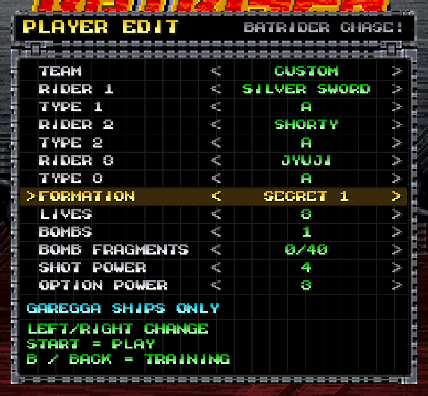
PLAYER EDIT: a CUSTOM team led by Silver Sword, with its first secret formation.
This page sets up who flies and what they start with. Press left and right to change a value, START to start the run, or B / BACK to return to the TRAINING page.
TEAM
CHOOSE: the game’s normal SELECT TYPE screen. SAME: the team you flew last, straight into the stage with no selection screens. Only available after you have flown a team. SELECT TEAM, TEAM EDIT, RANDOM EDIT, SELECT PLAYER: go straight to that selection screen. CUSTOM: the three riders chosen on the rows below.
RIDER 1 – 3 TYPE 1 – 3
The riders of a CUSTOM team, in the order they fly, and their type: A normal, B slower, C slowest, D fastest (each type also has its own colours). Changing one of these rows sets TEAM to CUSTOM. With TEAM on SELECT PLAYER there is a single RIDER row: CHOOSE shows the game’s own screen, or pick a rider to fly every life.
FORMATION
The options’ formation at the start: DEFAULT, V, BACK, FRONT, CIRCLE, CONTROL, or one of the five secret formations (SECRET 1 – 5). Battle Garegga guest riders only.
LIVES1 – 9 · ORIGINAL 1 – 4
Lives at the start (3 by default). In CHASE!, lives above four are kept as banked extends.
BOMBS0 – 4
Bombs each time a rider starts (1 by default).
BOMB FRAGMENTS0 – 39
Bomb fragments each time a rider starts; 40 fragments make a bomb. LB / RB change it by 10.
SHOT POWER1 – 4
Shot power at the start of the run (4, full power, by default). When you lose a life, it drops as in the normal game.
OPTION POWERNONE · 1 – 3
How many options you start the run with (3 by default). When you lose a life, it drops as in the normal game.
Playing a training run
A training run ends when you clear the stage or defeat the boss, or at GAME OVER (there are no continues in training). Either way, you return to the TRAINING page with START RUN selected, so pressing START once plays the same run again. Training scores never go into the high score tables, are always shown as invalid, and are not saved as replays (page ).
The training pause menu
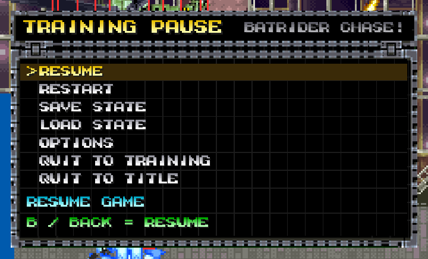
The TRAINING PAUSE menu.
Press BACK during a training run to open the TRAINING PAUSE menu. Press A to select a row, or B / BACK to resume.
RESUME
Continue the run.
RESTART
Restart the training stage from the beginning, with the same team.
OPTIONS
Open OPTIONS (page ).
QUIT TO TRAINING
Return to the TRAINING page.
QUIT TO TITLE
Return to the title menu.
RESTART and both QUIT rows ask for confirmation: press A again for YES or B for NO. Save states are not available in training.
TIP
To learn a boss: set START AT BOSS, set TEAM to SAME (in PLAYER EDIT) and turn on INVINCIBLE. Now every press of START puts you straight back into the fight. GAME SPEED 50% gives you time to study its attacks, and HITBOX ALL shows exactly where its bullets can hit you.
Options
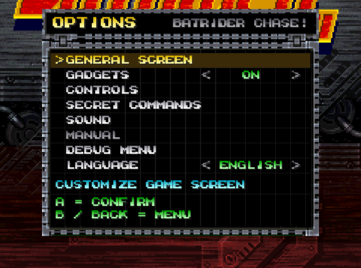
OPTIONS, opened from the title menu.
You can open OPTIONS from the title menu or from the pause menu. Press up and down to choose a row, and A to open a page; press left and right to change GADGETS and LANGUAGE. B / BACK goes back one page, and START closes all pages at once. Your changes are saved automatically (page ).
Each page shows its name at the top, then its rows, a help line for the selected row, and the buttons you can use.
GENERAL SCREEN
Picture size, position, rotation, scanlines, brightness and aspect ratio (page ).
GADGETSON / OFF
The information panels beside the game (page ). They need a 16:9 screen and PICTURE SIZE set to INTEGER or FULL; if they can’t be shown, a line under the menu says why.
CONTROLS
Button layout (page ).
SECRET COMMANDS
The arcade game’s hidden START commands (page ).
SOUND
Volume and sound tests (page ).
MANUAL
This manual, on the screen (page ).
DEBUG MENU
Hitboxes, cheats, high score reset and default settings. Only available from the title menu (page ).
LANGUAGEENGLISH / JAPANESE
Can only be changed outside a run (page ).
Options
GENERAL SCREEN
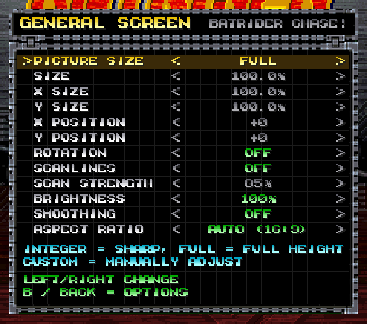
GENERAL SCREEN.
Press left and right to change a row (hold to repeat). Changes take effect immediately.
Changing any of the size or position rows switches PICTURE SIZE to CUSTOM automatically. Custom values are saved separately for each screen shape (16:9 or 4:3, rotated or not), and are greyed out while PICTURE SIZE is INTEGER or FULL.
PICTURE SIZE
INTEGER: the largest size that keeps every pixel sharp. FULL (default): the full height of the screen. CUSTOM: set by the five rows below.
SIZE X SIZE, Y SIZE
Custom overall size, width and height. A resets to 100%.
X / Y POSITION
Custom position. A resets to the centre.
ROTATION
OFF, LEFT or RIGHT, depending on how your display is set up (page ).
SCANLINES
OFF / ON: dark lines between the picture’s lines, like an arcade monitor.
SCAN STRENGTH
How dark the scanlines are: 5% to 100% (35% by default).
BRIGHTNESS
50% to 150% in 5% steps. 100% is the original brightness. A resets to 100%.
SMOOTHING
OFF shows sharp pixels; ON smooths them.
ASPECT RATIO
AUTO (follows the console’s setting), 16:9 or 4:3.
Options
CONTROLS
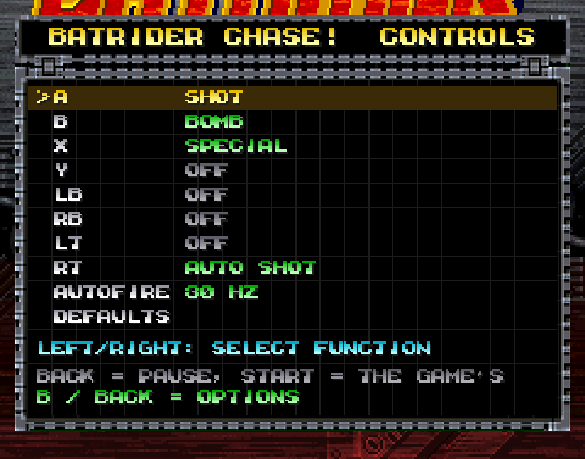
CONTROLS, with the default settings.
There is one row each for A, B, X, Y, LB, RB, LT and RT. Press left and right to choose what the button does during play:
OFF
Nothing.
SHOT · BOMB · SPECIAL
The arcade game’s three buttons.
AUTO SHOT
Fires automatically at the AUTOFIRE rate while held.
More than one button can have the same job. AUTOFIRE sets the AUTO SHOT rate: 30, 20, 15, 12 or 10 shots per second. DEFAULTS restores the original layout: A SHOT, B BOMB, X SPECIAL, RT AUTO SHOT, and the rest OFF. START and BACK cannot be changed: BACK always pauses, and START is always the arcade game’s START button.
SECRET COMMANDS
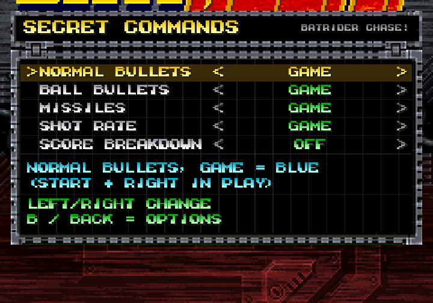
SECRET COMMANDS.
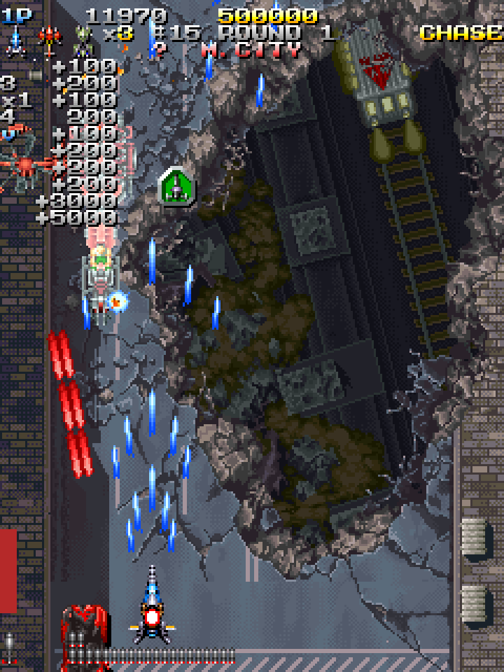
SCORE BREAKDOWN on, normal bullets RED.
The arcade game has hidden commands: during play, hold START and press a direction or a button. This page lets you set them for every run. The commands still work during play, just as in the arcade.
NORMAL BULLETS
Bullet colour. DEFAULT is the game’s own (blue). In play: START + right.
BALL BULLETS
DEFAULT: orange. In play: START + left.
MISSILES
DEFAULT: pink. In play: START + down.
SHOT RATE
Your ship’s built-in rapid fire: DEFAULT, or from 60 down to 7 shots per second. In play: START + SHOT for faster, START + SPECIAL for slower. Can only be set on this page outside a run.
SCORE BREAKDOWN
OFF / ON: lists every score you earn down the left side of the screen. In play: START + BOMB.
The available colours are YELLOW, BLUE, GREEN, PURPLE, PINK, RED and ORANGE.
These commands are part of the original arcade game, so they never affect your score, the rank or the high score tables.
Options
SOUND
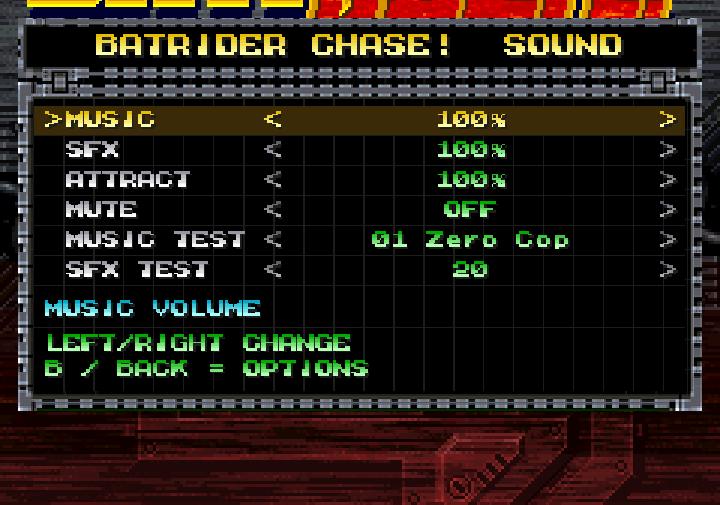
SOUND.
MUSIC
Music volume, 0% – 100% in steps of 10%.
SFX
Sound effects and voices, 0% – 100%.
ATTRACT
Volume on the title screen and in the demo, as a percentage of the two settings above.
MUTE
Turns all sound off.
MUSIC TEST
00 – 19, with the title of each tune. Press A to play it.
SFX TEST
20 – D7. Press A to play it.
The two tests are only available outside a run. During a run, volume changes are heard once you return to the game.
DEBUG MENU
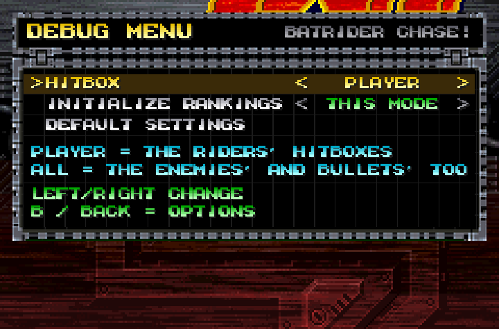
DEBUG MENU.
Only available in OPTIONS from the title menu.
HITBOX OFF / PLAYER / ALL
Which hitboxes are shown (page ). This is the same setting as on the TRAINING page.
INFINITE LIVES · INFINITE BOMBS · INVINCIBILITY OFF / ON
Cheats for normal runs: you never run out of lives, your bomb stock stays full, or your ship cannot be hit. While any of them is on, your score is invalid: it is not entered in the high score tables and no replay is saved (page ). They stay on until you turn them off or quit the game.
INITIALIZE RANKINGS THIS MODE / BOTH MODES
Erases high scores. Use left and right to choose which, then press A: CONFIRM? appears in red. Press A again to erase, or B to cancel.
DEFAULT SETTINGS
Resets every option, DIP switch and button to its default, after the same confirmation. MODE, high scores, save states and replays are not affected.
LANGUAGE
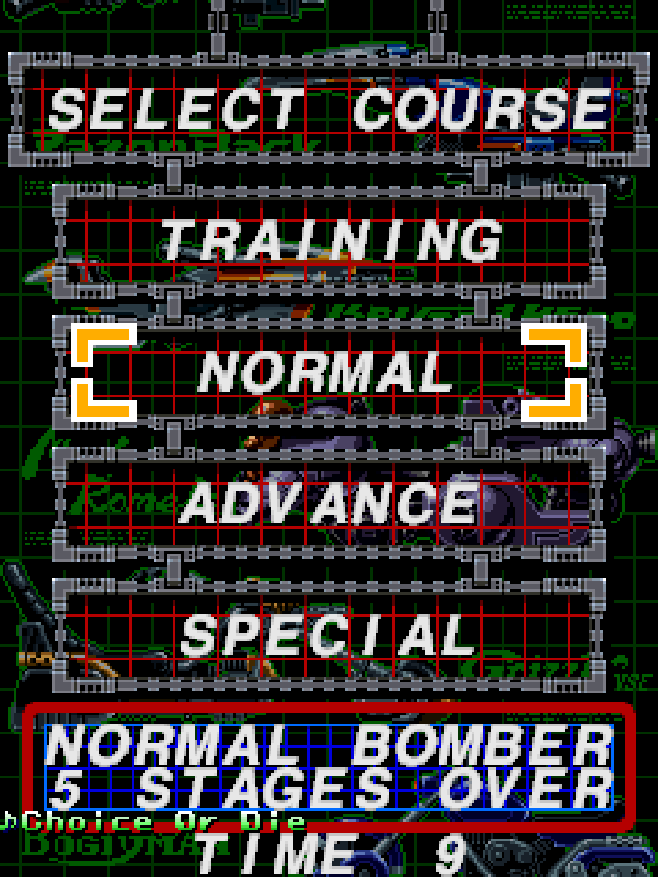
ENGLISH
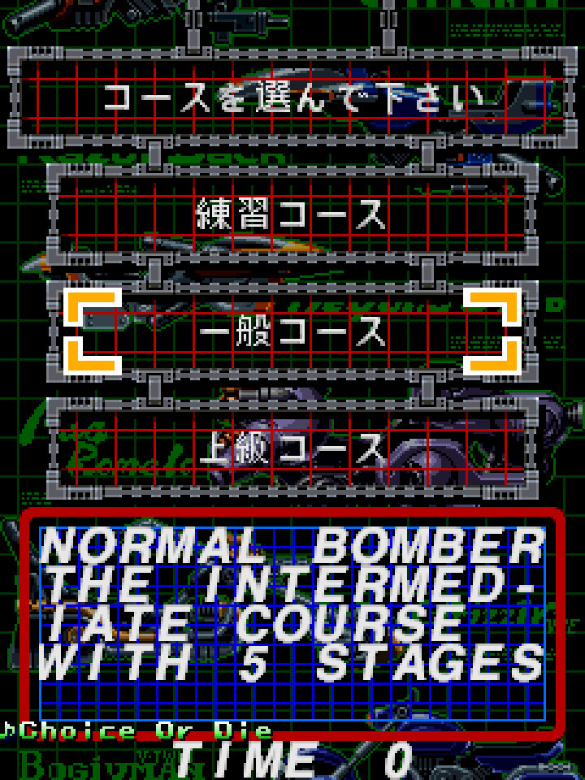
JAPANESE
ENGLISH or JAPANESE. This sets the language of the arcade game’s COURSE and TYPE selection screens, and of the on-screen MANUAL. The menus are always in English. LANGUAGE can only be changed outside a run. A replay always plays in the language it was recorded in.
Options
DIP SWITCHES
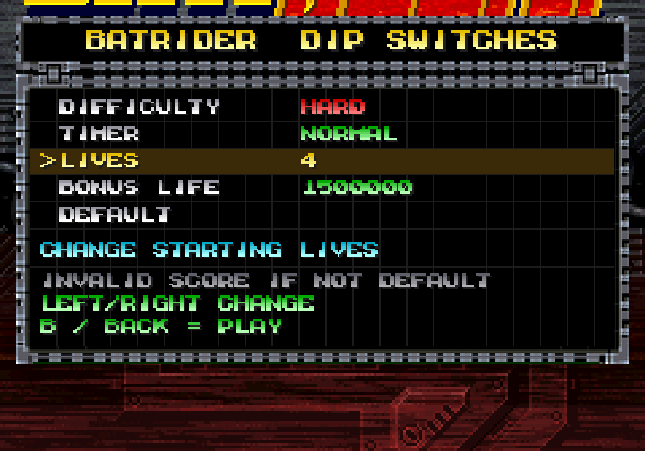
DIFFICULTY HARD and LIVES 4: changed settings are shown in red.
These are the arcade machine’s own settings for the original game. Open them from the PLAY or TRAINING page with MODE set to ORIGINAL. Press left and right (or A) to change a row; any value that differs from the default is shown in red. DEFAULT resets all four.
As the page warns, your score is invalid if any setting differs from the default (page ). CHASE! is not affected: it always uses its own fixed settings.
Choices (defaults in bold)
DIFFICULTY
EASY · NORMAL · HARD · VERY HARD
TIMER
HIGHEST · HIGH · NORMAL · LOW: how much time you get for each boss.
LIVES
1 · 2 · 3 · 4: the number of riders in a team.
BONUS LIFE
NONE · 2000000 · 1500000 · 1000000: an extend item every time your score passes this many points.
SELECT PLAYER is only available when LIVES is 3. With any other number, the original game’s SELECT TYPE screen leaves it out.
Pausing
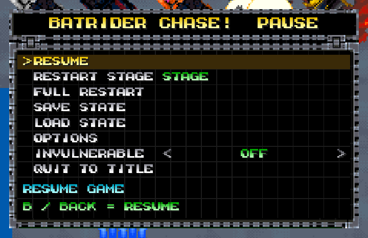
The pause menu.
Press BACK during a stage to pause the game and open the pause menu. The music pauses too. Press up and down to choose a row and A to select it, or B / BACK to resume. (During training, this is the TRAINING PAUSE menu instead: page .)
RESUME
Continue playing.
RESTART STAGE< STAGE / STATE >
STAGE: back to the start of the current stage. STATE: back to the last save state saved or loaded in this run. Choose with left and right. Asks for confirmation.
FULL RESTART
Start again from stage 1 with the same team. Asks for confirmation.
SAVE STATE · LOAD STATE
Open the save state pages (page ).
OPTIONS
Open OPTIONS (without the DEBUG MENU) (page ).
INVULNERABLEOFF / ON
While ON, your ship cannot be shot down. Change it with left, right or A.
QUIT TO TITLE
End the run, after confirmation. If your score is high enough, you can still enter your name.
Confirmations are answered with A (YES) or B (NO). RESTART STAGE on stage 1 keeps your score valid and starts a new replay from that point. On any later stage, or with STATE, it makes your score invalid (page ).
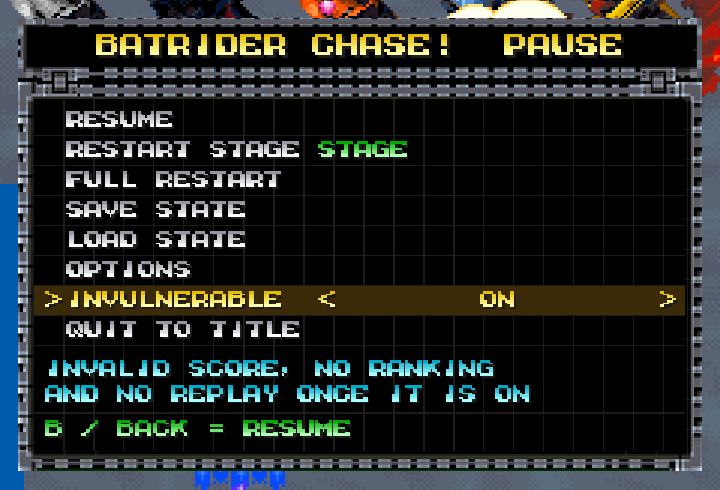
INVULNERABLE turned ON.
CAUTION
INVULNERABLE is OFF at the start of every run. As soon as you turn it on, your score becomes invalid, and turning it off again does not undo this. You will not be able to enter your name, the high score tables are not changed, and no replay is saved.
The end of a run
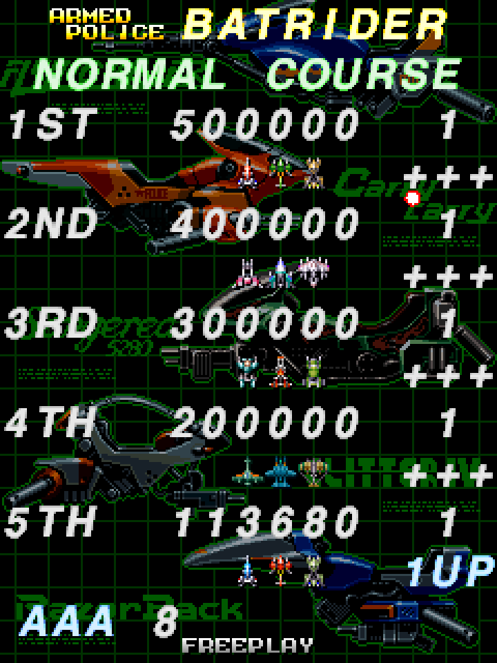
Name entry. A score in the top five for its course lets you enter three initials before the countdown ends.
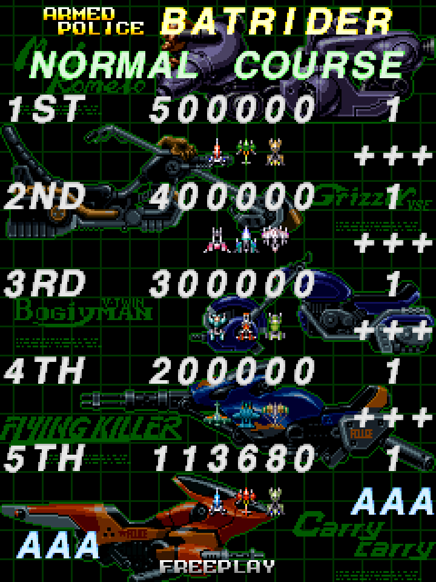
High scores. One table per course, saved between sessions.
If you clear a course, you see the ending and the staff credits (the arcade’s TRAINING course has neither). The game then asks SAVE REPLAY? so you can keep a recording of the whole run (page ).
Valid and invalid scores
Anything that gives you an advantage makes your score invalid. The secret commands, CONTROLS, and the screen and sound settings never do.
An invalid score is shown in red: in the gadgets’ STAGES panel (page ), in the SAVE REPLAY? box (marked *), and on the REPLAY DATA page (marked *). Once invalid, it stays invalid for the rest of the run.
What happened
Score
High scores and replay
You continued
Invalid
Not entered (the arcade game’s own rule). You can still save a replay.
DIP switches not at their defaults
Invalid
Name entry as usual. You can still save a replay.
LOAD STATE during a run
Invalid
No replay.
RESTART STAGE after stage 1, or with STATE
Invalid
No replay.
INVULNERABLE turned on
Invalid
No name entry, high scores unchanged, no replay.
A DEBUG MENU cheat on
Invalid
No name entry, high scores unchanged, no replay.
TRAINING
Invalid
Never entered, no replay.
RESTART STAGE on stage 1
Unchanged
A new replay starts from the beginning of the stage.
FULL RESTART
New run
Valid again (unless INVULNERABLE is still on). A new replay starts.
QUIT TO TITLE
Unchanged
Name entry if the score is high enough. No replay.
Save states
Save the game at any moment and come back to it whenever you like.
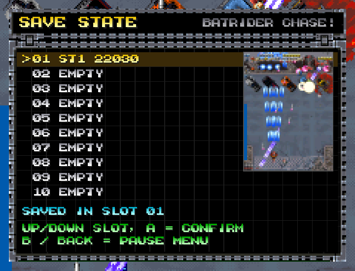
SAVE STATE: just saved in slot 01.
SAVE STATE (in the pause menu) and LOAD STATE (in the pause menu and the title menu) open a page of slots: ten for each MODE, CHASE! and ORIGINAL. Each slot shows the stage and score when it was saved, and the selected slot shows a small picture of that moment.
SAVE STATE
Available during a run. Choose a slot and press A to save. If the slot is already in use, you are asked before it is overwritten.
LOAD STATE
Press left and right to see the other MODE’s slots. Press A to load a state (after confirmation); loading a state from the other MODE switches to that game. Press X to delete a state (after confirmation).
After loading, the game waits in the pause menu: choose RESUME to carry on. Loading a state makes your score invalid and stops the replay recording (page ).
NOTE
High scores are not part of a save state. Loading an old state never brings back old high scores.
Save states are stored as files next to the .xex: batrider360_state_c01.bin to _c10.bin for CHASE!, and _o01.bin to _o10.bin for ORIGINAL. States saved by a different version of batrider360 may not load.
Replays
Every run is recorded from the start. Save the good ones.
At the end of a run the game asks SAVE REPLAY? and shows the MODE, the stage reached, the score and how long the run lasted. Press A to save it or B to discard it. Runs shorter than ten seconds are not offered, and neither are runs that cannot be saved as replays (page ). Up to thirty replays are kept; when all thirty slots are full, the oldest replay is replaced.
REPLAY DATA
REPLAY DATA on the title menu lists your replays, newest first, twelve per page, with the number of slots used at the top. Each row shows the MODE (CHA or ORG), the stage reached, the score and the length. Rows with an invalid score are red and marked with a *. Press A to watch a replay, or X to delete it (after confirmation).
Watching a replay
LB / RB
Slower / faster: 1/2, x1, x2, x3.
BACK or START
Pause the replay: RESUME, RESTART REPLAY (from the beginning) or QUIT REPLAY. Press B, BACK or START to resume.
A banner shows the playback speed, the time played and the total length. When the replay ends, you return to the REPLAY DATA page.
A replay remembers the settings it was recorded with (button layout, continues, DIP switches, secret commands and LANGUAGE), so it always plays back the same way, whatever your current settings are. Menus opened during the run, such as OPTIONS or the pause menu, are not recorded.
Replays are stored as files next to the .xex: batrider360_replay_01.bin to _30.bin.
Reading this manual on the screen
OPTIONS > MANUAL shows this manual in the language set by LANGUAGE: two pages side by side with ROTATION OFF, or one page at a time on a rotated display (LEFT or RIGHT).
✚ right, RB or A
Next page
✚ left or LB
Previous page
B or BACK
Back to OPTIONS (START closes all pages)
The manual is read from batrider360_manual.bin, which comes with the release and must be in the same folder as batrider360.xex. If the file is missing, the MANUAL row is greyed out and the help line reads NO BATRIDER360_MANUAL.BIN BESIDE THE XEX.
The gadgets
A vertical game on a widescreen TV leaves empty space on both sides. This version fills that space with information panels that update as you play.
The gadgets show information the arcade game tracks but never displays: the rank, the next items to drop, the conditions for the secret bosses, and more. They are based on Baffo’s Batrider layout for MAME (version 0.4: design by baf, Lua by Olifante & DUBS, rank start bar by Miquel), with new panels for CHASE! drawn in the same style. Turn them off with OPTIONS > GADGETS. They are also hidden on a 4:3 screen and when PICTURE SIZE is CUSTOM.
ROTATION OFF, a CHASE! run. Left of the game: the rider panels, STATUS, WEAPON and the CHASE! panels at the bottom. Right: the rank, items, medals, secret bosses, boss information and stage scores.
Left side
CURRENT PLAYER
The faces of your three riders (the one flying first, then the next two) and the team’s type, A to D. Next to it, the input display shows the stick and buttons as you press them, along with the shot charge.
STATUS
The course, the stage, the time spent in it, and the number of enemies and bullets on the screen.
WEAPON
Shot level, number of options, their formation (Battle Garegga guest riders only: V, BACK, FRONT, CIRCLE, CONTROL, or SPECIAL for the secret formations), bombs in stock, and the Sp.Power and Sp.Option marks.
BGM
The tune now playing, with its title from the game’s sound test and its composer.
CHASE! panels (bottom left)
CHAIN
The chain timer as a bar, with the chain count below it (page ).
MULTIPLIER
x1 to x8, with the amber C when a Chase Break is ready, and an arrow showing your position: up in the upper half of the screen, down in the lower half.
LIVES
Riders flying plus banked extends, five at most.
NEXT EXTEND
The points needed for the next extend.
Right side
RANK BAR
The current rank as a percentage, and where the rank started in this run.
ITEM DROPS
The next six items in the drop order (page ).
ITEM COUNT
How many of each item have dropped so far. A count turns red when it reaches its limit.
MEDAL
The number of medals dropped, and the next medal’s picture and value.
SECRET BOSSES
The twelve conditions for meeting the secret bosses: an empty box while a condition is still possible, a check mark when it has been met, and a minus when it can no longer be met.
BOSS INFO
The boss’s remaining hit points and time in seconds.
STAGES
Your score in each stage, in the order you played them, and the TOTAL. Shown in red when the score is invalid (page ).
The original game, and rotated displays
The original game has no chain, so the CHASE! panels stay empty. All other panels work exactly as in CHASE!.
ORIGINAL.Rotated.
On a rotated display, the gadgets sit above and below the game, without SECRET BOSSES and STAGES.
Saved files
The arcade machine forgets everything when it is switched off. This version saves your settings and scores.
Everything is saved in small files next to batrider360.xex, all starting with batrider360_. You don’t need to do anything: the game saves changes in the background without interrupting play.
What is saved
When
Screen and sound settings, GADGETS, LANGUAGE, HITBOX and MODE (batrider360_host.txt)
When you leave a page or menu after changing something
CONTINUES, CONTROLS, SECRET COMMANDS, DIP switches and the sound test numbers (batrider360_options.txt)
Same as above
High score tables for each MODE, top five of each (batrider360_rankings_chase.bin, _original.bin)
When they change
Save states, ten for each MODE (batrider360_state_c01 … _c10 and _o01 … _o10)
When you save or delete one (page )
Replays, thirty at most (batrider360_replay_01 … _30)
When you save or delete one (page )
Menu sounds, created from the ROM set (batrider360_menusnd.bin)
The first time you start the game
TRAINING and DEBUG MENU cheat settings are not saved: they last until you quit the game. A log file, batrider360.log, is written each time the game starts.
NOTE
Your files stay with the game: copy the whole folder and your scores and settings come with it. Delete them and the game starts fresh. The folder must be on a drive the console can write to.
One file is not created by the game: batrider360_manual.bin, which contains the on-screen manual. It comes with the release; keep it in the same folder as batrider360.xex.
When high scores are saved
A score is saved to the high score table after you finish entering your name, not while you are still playing. If you quit or switch off during name entry, that score is lost.
Each MODE has its own high score tables, with one table per course: CHASE! scores and original scores are never mixed. See page for which runs are entered.
Starting fresh
In the DEBUG MENU, INITIALIZE RANKINGS erases the high scores of one MODE or both, and DEFAULT SETTINGS resets all options. Both ask for confirmation first (page ).
Troubleshooting
Problem
Solution
The screen stays dark red after starting
The ROM set was not found. Put MAME’s merged batrider.zip in the same folder as batrider360.xex. The log file batrider360.log shows where the game looked. Press BACK to return to the dashboard.
The game is lying on its side
ROTATION in GENERAL SCREEN is set to LEFT or RIGHT, which is for a display turned on its side. For a normal TV, set it to OFF (page ).
There are panels on both sides of the game
Those are the gadgets (page ). Set OPTIONS > GADGETS to OFF to hide them.
The gadgets don’t appear
They need GADGETS ON, a 16:9 screen (ASPECT RATIO) and PICTURE SIZE set to INTEGER or FULL. The OPTIONS page tells you what is missing.
The picture is too small, too large or off-centre
In GENERAL SCREEN, set PICTURE SIZE to FULL, or press A on each CUSTOM row to reset it (page ).
Settings or scores are not saved
The game saves its files next to the .xex, so the folder must be on a drive the console can write to (page ).
The score at the top or the TIME on the selection screens is cut off
Your TV is cropping the edges of the picture (overscan). Set the TV to show the whole picture; this setting is often called Just Scan, Full Pixel or Screen Fit.
There is no INSERT COIN on the title screen
That is normal: both games are set to free play.
START does nothing on the title screen
Wait until the title has finished appearing; the menu responds once it is fully shown.
The game started playing by itself
That is the demo, which starts after about 30 seconds on the title menu without input. Press START.
START doesn’t pause the game
During play, START is the arcade game’s own button, used for the secret commands. Press BACK to pause.
The bullets are a different colour, or numbers scroll down the left of the screen
A secret command is on. Hold START and press the same direction or button during play, or set it back to DEFAULT / OFF in OPTIONS (page ).
SPECIAL didn’t set off a Chase Break
You need x4 or higher (the amber C) and something on screen to convert: bullets or small enemies. It also can’t be used during the five seconds after the previous one.
A button does nothing during play
It is set to OFF or to another job in CONTROLS. Choose DEFAULTS to restore the original layout (page ).
My score is red
The run used a continue, a save state, a restart, INVULNERABLE, a DEBUG MENU cheat, or changed DIP switches (page ).
I couldn’t enter my name
INVULNERABLE or a DEBUG MENU cheat was on, you continued, or it was a training run (page ).
START RUN plays the other game
START RUN plays the game set by MODE on the PLAY page: CHASE! or ORIGINAL (page ).
My high scores are gone
Each MODE has its own high score tables. Check that MODE is set to the game you played.
The selection screens are in Japanese
OPTIONS > LANGUAGE is set to JAPANESE. Change it to ENGLISH outside a run.
LANGUAGE, SHOT RATE or the sound tests can’t be changed
They can only be changed outside a run. Use OPTIONS from the title menu.
There is no DEBUG MENU
It is only available in OPTIONS from the title menu, not from the pause menu.
My chain broke even though I was shooting
Only kills (and hits on a boss) refill the timer. Shots that hit nothing don’t count.
MANUAL is greyed out
Put batrider360_manual.bin from the release in the same folder as batrider360.xex.
The game doesn’t move after loading a state
It is waiting in the pause menu. Choose RESUME (page ).
A save state or replay won’t load
It was made with a different version of batrider360.
The game didn’t ask SAVE REPLAY?
Runs under ten seconds are not offered, and neither are runs that loaded a state, restarted after stage 1, were quit, or had INVULNERABLE or a cheat on (page ).
An old replay has disappeared
Thirty replays are kept; when they are full, the oldest is replaced by the newest.
The picture is blurry, too dark or too bright
In GENERAL SCREEN, check SMOOTHING (OFF for sharp pixels) and BRIGHTNESS (100% is the original).
Based on Baffo’s Batrider layout for MAME, v0.4: design by baf, Lua by Olifante & DUBS, rank start bar by Miquel
68000 emulation
Musashi by Karl Stenerud (MIT license)
Z80 emulation
superzazu/z80 (MIT license)
YM2151 sound
ymfm by Aaron Giles (BSD 3-Clause license)
Libraries
zlib; xsdk (MIT license)
This is an unofficial, non-commercial version made by fans. It is not licensed, sponsored or endorsed by the owners of the game or by the maker of any system it runs on. ARMED POLICE BATRIDER, its characters and its artwork belong to their respective owners. Xbox 360 is a trademark of Microsoft. All other names are the property of their respective owners.
Notes
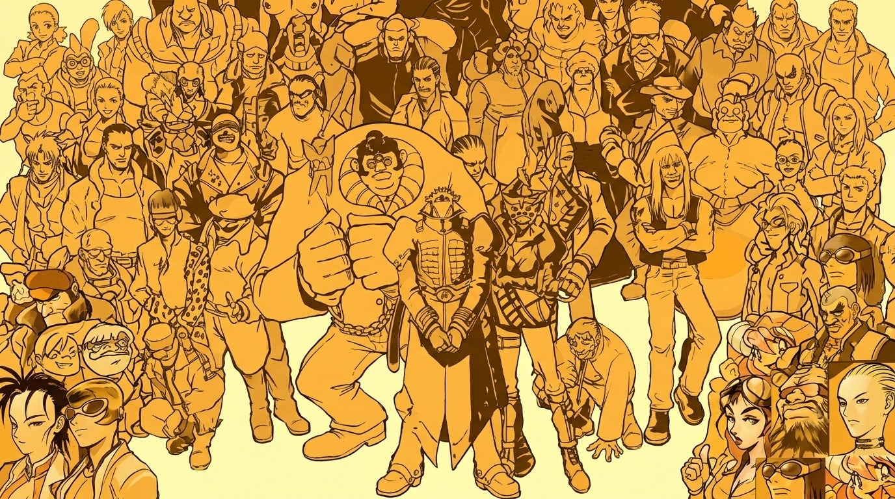
Chase the chain.
Every 16 kills raise your multiplier, up to x8, and you have a second and a half to find the next target. Fly forward and the timer is on your side; hang back and it isn’t. Medals fly to you, and when the screen fills with bullets, one button turns them all into gold.
CHASE! and the original 1998 arcade game, each with its own high scores. A training mode for every stage and boss, save states and replays, and the gadgets beside the game showing everything the arcade machine knows.